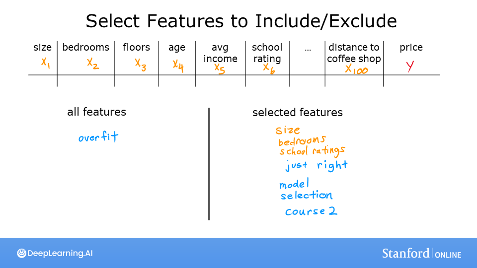
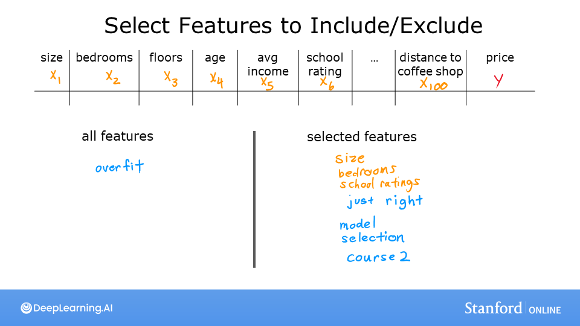

Ungraded Lab: Overfitting

 

Goals
In this lab, you will explore: - the situations where overfitting can occur - some of the solutions
[1]:
%matplotlib widget
import matplotlib.pyplot as plt
from ipywidgets import Output
from plt_overfit import overfit_example, output
plt.style.use('./deeplearning.mplstyle')
Overfitting
The week’s lecture described situations where overfitting can arise. Run the cell below to generate a plot that will allow you to explore overfitting. There are further instructions below the cell.
[2]:
plt.close("all")
display(output)
ofit = overfit_example(False)
In the plot above you can: - switch between Regression and Categorization examples - add data - select the degree of the model - fit the model to the data
Here are some things you should try: - Fit the data with degree = 1; Note ‘underfitting’. - Fit the data with degree = 6; Note ‘overfitting’ - tune degree to get the ‘best fit’ - add data: - extreme examples can increase overfitting (assuming they are outliers). - nominal examples can reduce overfitting - switch between Regression and Categorical to try both examples.
To reset the plot, re-run the cell. Click slowly to allow the plot to update before receiving the next click.
Notes on implementations: - the ‘ideal’ curves represent the generator model to which noise was added to achieve the data set - ‘fit’ does not use pure gradient descent to improve speed. These methods can be used on smaller data sets.
Congratulations!
You have developed some intuition about the causes and solutions to overfitting. In the next lab, you will explore a commonly used solution, Regularization.
[2]: